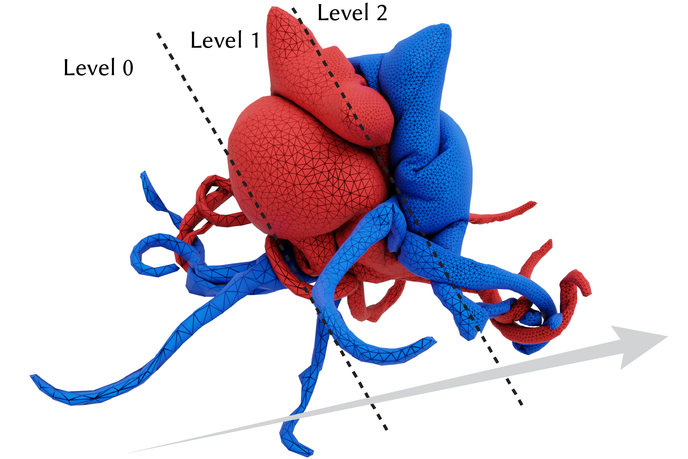

Level-of-Detail for Geometry Processing and Simulation
Jiayi Eris Zhang1, Hsueh-Ti Derek Liu2
1Stanford University, 2Roblox
ACM SIGGRAPH North America Course

Level-of-Detail for Simulation: We apply Progressive Dynamics (PD) [Zhang et al. 2024] to simulate two in- flated Octocat objects colliding, with details progressively emerging across resolution levels.
Level-of-detail (LOD) is a concept we intuitively experience in everyday life—whether it is how our brains filter visual information or how digital maps adjust as we zoom. At its core, LOD is about allocating detail where it matters most, striking a balance between efficiency and precision. While originally developed to accelerate rendering in computer graphics, modern LOD techniques have evolved into a powerful framework for constructing hierarchical shape representations and designing multilevel solvers in geometry processing and simulation.
This course begins by highlighting the role of LOD not just in visualization, but also in numerical computation. We introduce key methods for constructing hierarchical structures, then dive into the design of multilevel solvers—focusing on how to trans- fer quantities and signals across levels, with emphasis on surface self-parametrization and intrinsic prolongation. We conclude with ap- plications that showcase how these hierarchical frameworks enable efficient, accurate and scalable solutions to problems in geometry processing and physical simulation.